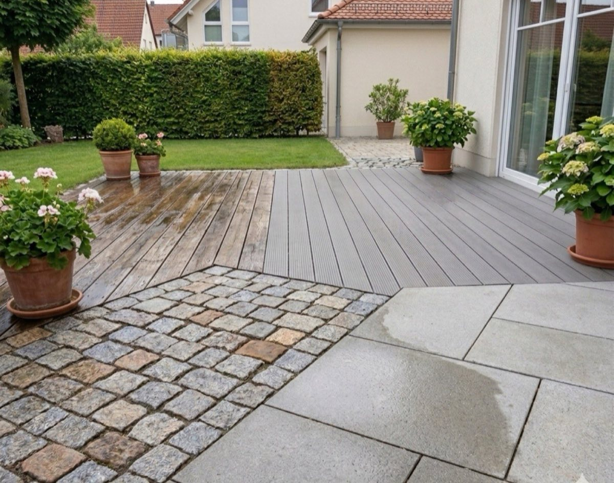

Zuerst schauen wir, um welchen Stein es geht
Wir schauen uns Ihren Stein genau an und wählen danach Druck und Mittel. An einer Stelle, die man nicht sieht, testen wir das Ergebnis. Erst dann machen wir weiter.

Leistung
Empfindliche Beläge vertragen keinen groben Druck.
Naturstein ist nicht gleich Naturstein. Marmor und Kalkstein vertragen keine scharfen Mittel. Sandstein ist weich und geht bei zu viel Druck kaputt. Granit hält fast alles aus. Wer alle Steine gleich behandelt, macht die Hälfte davon kaputt.
Eine Terrasse grenzt meist direkt ans Haus. Wasser und Reinigungsmittel dürfen nicht in die Fuge zur Hauswand oder in die Kellerschächte laufen. Das ist eine Frage von Sorgfalt, nicht von Kraft.
Wie wir arbeiten
Wir schauen uns Ihren Stein genau an und wählen danach Druck und Mittel. An einer Stelle, die man nicht sieht, testen wir das Ergebnis. Erst dann machen wir weiter.
Bei weichem Sandstein oder Marmor arbeiten wir mit wenig Druck und einer Bürste. Das dauert länger. Dafür bleibt die Oberfläche schön.
Treppenkanten und den Übergang zur Hauswand machen wir von Hand nach. Genau dort sieht man später, ob sauber gearbeitet wurde.
Naturstein braucht eine andere Schutzschicht als Beton. Wir nehmen eine, die den Stein atmen lässt.
Kostenlos und unverbindlich
Wir kommen vorbei und reinigen etwa einen Quadratmeter als Probe. Sie sehen das Ergebnis bei sich zu Hause. Nicht auf einem Foto von jemand anderem.
Häufige Fragen
Ja, wenn das falsche Mittel benutzt wird oder der Druck zu hoch ist. Polierte Steine sind besonders empfindlich. Deshalb prüfen wir vorher und testen an einer verdeckten Stelle.
Meistens ja. Ganz ehrlich: nicht immer vollständig. Öl zieht tief in den Stein ein. Bei der Probefläche sehen Sie, was wirklich geht. Wir versprechen Ihnen nichts, was wir nicht halten können.
Das hängt vom Stein und vom Zustand ab. Deshalb kommen wir vorbei und reinigen eine Probefläche. Danach bekommen Sie einen festen Preis, schriftlich.
Ohne Schutzschicht etwa alle zwei bis drei Jahre. Mit Schutzschicht viel seltener.
Weitere Leistungen
Die Probefläche kostet nichts und dauert eine halbe Stunde.